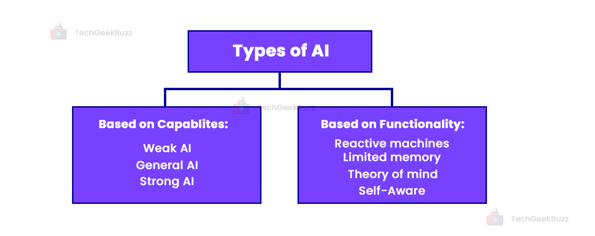

|
Types of Artificial Intelligence:
Artificial Intelligence can be divided in various types, there are mainly two types of main categorization which are based on capabilities and based on functionally of AI. Following is flow diagram which explain the types of AI.

AI type-1: Based on Capabilities
1. Weak AI or Narrow AI:
- Narrow AI is a type of AI which is able to perform a dedicated task with intelligence.The most common and currently available AI is Narrow AI in the world of Artificial Intelligence.
- Narrow AI cannot perform beyond its field or limitations, as it is only trained for one specific task. Hence it is also termed as weak AI. Narrow AI can fail in unpredictable ways if it goes beyond its limits.
- Apple Siriis a good example of Narrow AI, but it operates with a limited pre-defined range of functions.
- IBM's Watson supercomputer also comes under Narrow AI, as it uses an Expert system approach combined with Machine learning and natural language processing.
- Some Examples of Narrow AI are playing chess, purchasing suggestions on e-commerce site, self-driving cars, speech recognition, and image recognition.
2. General AI:
- General AI is a type of intelligence which could perform any intellectual task with efficiency like a human.
- The idea behind the general AI to make such a system which could be smarter and think like a human by its own.
- Currently, there is no such system exist which could come under general AI and can perform any task as perfect as a human.
- The worldwide researchers are now focused on developing machines with General AI.
- As systems with general AI are still under research, and it will take lots of efforts and time to develop such systems.
3. Super AI:
- Super AI is a level of Intelligence of Systems at which machines could surpass human intelligence, and can perform any task better than human with cognitive properties. It is an outcome of general AI.
- Some key characteristics of strong AI include capability include the ability to think, to reason,solve the puzzle, make judgments, plan, learn, and communicate by its own.
- Super AI is still a hypothetical concept of Artificial Intelligence. Development of such systems in real is still world changing task.

Artificial Intelligence type-2: Based on functionality
1. Reactive Machines
- Purely reactive machines are the most basic types of Artificial Intelligence.
- Such AI systems do not store memories or past experiences for future actions.
- These machines only focus on current scenarios and react on it as per possible best action.
- IBM's Deep Blue system is an example of reactive machines.
- Google's AlphaGo is also an example of reactive machines.
2. Limited Memory
- Limited memory machines can store past experiences or some data for a short period of time.
- These machines can use stored data for a limited time period only.
- Self-driving cars are one of the best examples of Limited Memory systems. These cars can store recent speed of nearby cars, the distance of other cars, speed limit, and other information to navigate the road.
3. Theory of Mind
- Theory of Mind AI should understand the human emotions, people, beliefs, and be able to interact socially like humans.
- This type of AI machines are still not developed, but researchers are making lots of efforts and improvement for developing such AI machines.
4. Self-Awareness
- Self-awareness AI is the future of Artificial Intelligence. These machines will be super intelligent, and will have their own consciousness, sentiments, and self-awareness.
- These machines will be smarter than human mind.
- Self-Awareness AI does not exist in reality still and it is a hypothetical concept.
Feedback
- Send your Feedback to nigammishra826@gmail.com
|